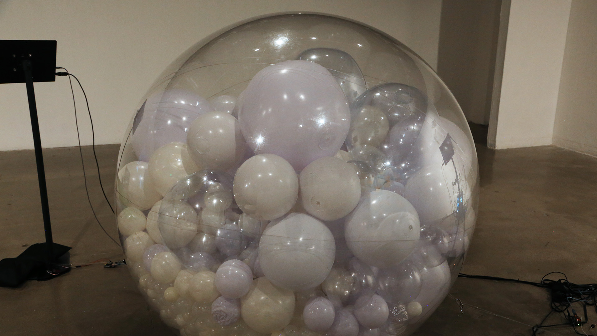

Supporting evidence / focused technical notes
Other systems
I have connected.
These works add context to the three main cases. The notes identify documented mechanisms and the evidence needed to inspect them more closely.

Unity / XR / 2023
NARCI / Be NARCI
The paired experiences change the participant’s role from being addressed by a figure to acting on other figures. The project record describes tracked-hand input mapped to Unity interaction events and material or object-state changes.
The public README documents Quest Pro hand tracking and touch, pinch, and grab interactions. Original gesture bindings, tracking-loss behavior, and runtime captures still need inspection. No clinical or therapeutic outcome is claimed.
Next technical capture
Capture hands entering view, the actual interaction event in the Inspector, its effect, and tracking loss / reacquisition. Record NARCI and Be NARCI separately.

Unity / VR / 2019
Graffiti Freedom
The documented painting path separates short-lived spray particles from persistent surface state. Particle hits provide surface information, a RenderTexture accumulates a mask, and the wall shader presents the evolving painting.
Particles and RenderTexture appear in the technical documentation. Claims about saving between sessions, exact UV acquisition, and performance need the original implementation or a focused capture. They are not asserted here.
Next technical capture
Show controller input, the spray effect, a surface-hit debug view, the RenderTexture preview, and the painted wall. Stop spraying to demonstrate which state remains.

Unity / Python / Arduino
AI ZOO
I connected language and gesture input with AI responses, voice, lighting, and Arduino-driven motor output. Unity and Python coordinate the system so a response can become a physical and audiovisual event.
The available installation archive and owner-confirmed scope support system-integration work. Exact message schemas, state-update rules, hardware stop behavior, and timing measurements still need code or bench evidence. Apparent emotion is not evidence of machine feeling.
Next technical capture
Record one input, its control message, and voice / light / motor output together. Show neutral, response, reset, and interrupted-input behavior. Use an isolated bench setup for any private hardware code.

Unity HDRP / digital human / 2022
Gang Se-hwang
I integrated character assets, body and facial performance, materials, and interaction triggers into a museum digital-human experience. The technical value lies in the transition from prepared character assets to a running interactive system.
Repository-hosted images document the character pipeline and Unity preview. The original Animator configuration, clip transitions, interaction code, and current executable need additional captures. Exact installation metadata varies across older pages, so only the museum context is used here.
Next technical capture
Show the imported rig and Animator, trigger one interaction, inspect the actual animation transition, and record the final kiosk view. Distinguish imported performance assets from runtime logic.
Engine boundary
Unreal complements
the Unity work.
Shininho and Jooan document Unreal / MetaHuman character-production work. They are supporting digital-human context and are not presented as Unity implementations.
Digital-human portfolio ↗Claim boundary
Prototype plans stay
separate from evidence.
Windward and FrameFlow are omitted from the completed Unity selection because existing material mixes browser prototypes with proposed Unity work. A browser demo does not establish a Unity implementation.
Evidence and current status ↗